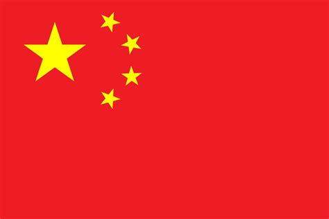
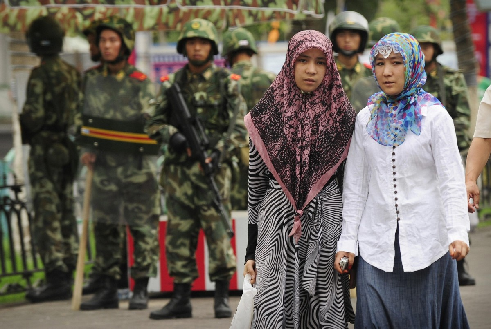
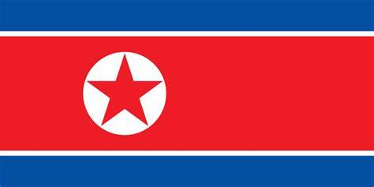
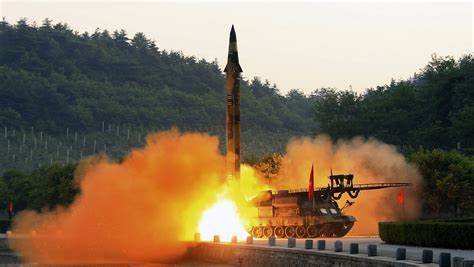
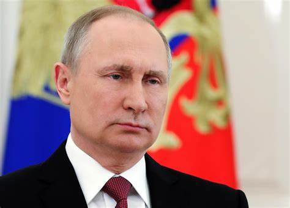
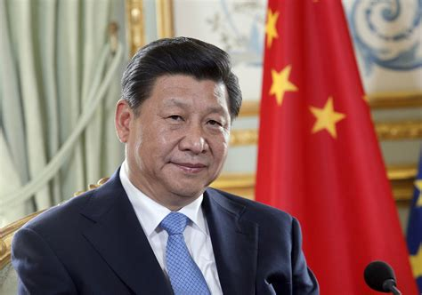
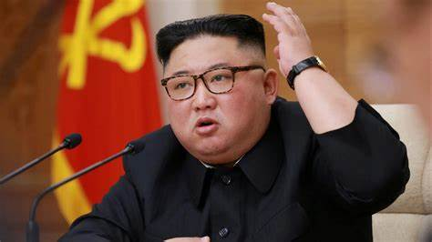
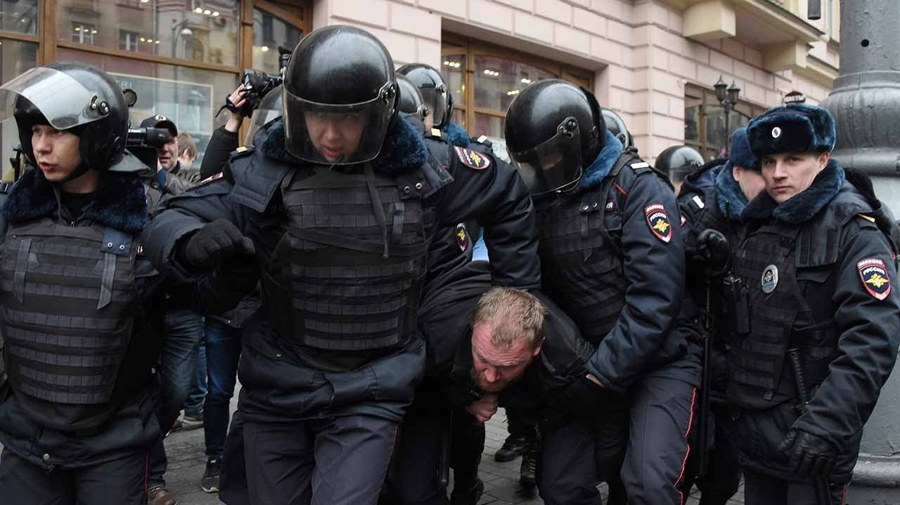

Authoritarianism
Introduction
Even in our modern age, some countries are still stuck in the past. Their people have no power, their wealth locked away from most, and their future entirely dependent on the decisions of a few people. While democracy and freedom has continually spread worldwide, these nations continue to follow systems that have long proven to be ineffective and inefficient at solving their problems in our ever-changing world.
Definition
Authoritarianism is a form of government where one person, or a few people are in absolute control of a country. In such a system, rights and freedom are virtually nonexistent, and the people do not have any tangible power. Opposition, even in the smallest extent is usually severely punished.
History
For most of human history, authoritarianism was commonplace. Kings, queens, duchies and emperors did what they saw fit without any fear of reprisal for their actions. They justified their rule by claiming either to be related to God, or to be appointed by God to rule over the people. However, this all changed in 1783 when the American Revolution succeeded in establishing the world's first democracy. Over the next three centuries, democracy spread across the world, with countries undergoing peaceful or violent transitions to new, democratic systems. However, holdovers from the past are still present, some possessing great influence on the world stage.
Relics of the Past
Below are some countries that practice authoritarianism
-
PRC (People's Republic of China)
Social Credit System
With the Chinese Communist Party's iron grip over China's 1.45 billion people, the People's Republic of China is by far the largest authoritarian state in terms of population. The famous "social credit score" system is used by the Chinese government to identify people who are out of line. Actions such as speaking against the CCP result in lower social credit, whereas watching propaganda videos or actively supporting the CCP will give you higher social credit. In such a system, a higher social credit means more benefits, and vice versa. This incentivizes behavior that forces people to follow the strict regulations imposed on them by the CCP.
Oppression
Ethnic minority groups living in China's more rural areas have been facing several human rights violations and harsh treatment from the central government. The Uyghurs that populate China's northwestern province of Xinjiang are the most famous example of this, with so-called "re-education camps" being set up to facilitate the imprisonment, torture, and killing of thousands of Chinese Uyghurs.
Armed Chinese troops stand guard at a checkpoint in Xinjiang, carefully monitoring the local Uyghurs.
-
Democratic People's Republic of Korea (DPRK or North Korea)
Brainwashing
However "democratic" the DPRK claims to be, there is no doubt that it is an authoritarian state under control of the WPK (Worker's Party of Korea). No matter who people vote in the country's sham elections, it is guaranteed that North Korea's "supreme leader" (currently Kim Jong-un) will win. The people of the aptly named "Hermit Kingdom" are shown propaganda every day, praising their great leader and the achievements of North Korea's socialist system over the "evil" and "greedy" capitalist system put in place by the West. North Koreans are also taught from a young age that in Western nations, most people wear rags and are very poor, while the few rich people live in lavish mansions, not realizing that it describes their country instead.
A System Designed for Failure
North Korea's current political system is often compared to the Soviet Union of the 1930s, during the reign of communist dictator Joseph Stalin. With a cult of personality built around himself, North Korea's supreme leader does whatever he wants and goes wherever he wants, with armed bodyguards following him at all times. The country's military expenditure is believed to be up to 24% of North Korea's tiny economy, leaving the rest to be used up by North Korean elites and a miniscule portion for the people, who recieve barely enough food to survive. The PRC is North Korea's main ally and is seen as the only power propping up Kim Jong-un's dictatorship, funding most of North Korea's large projects, providing the majority of its electricity, and keeping South Korea and the United States from invading North Korea altogether. However, this system is proving to be unsustainable, as the nation has faced several famines and minor disturbances in the supply chain could spell disaster for North Korea and its people.
North Korea regularly holds nuclear missile tests, launching test missiles near the coasts of South Korea and Japan as a reminder that the DPRK is able to retaliate should the West threaten it.
-
Russian Federation (Russia)

Subjugation
While Russia claims to be a democratic nation, the current president Vladimir Putin has been in office since 2000. His political party, "United Russia" has repeatedly won every single election, with all other political parties simply being dummy parties. State-owned media propagates lies throughout the Russian people, skewing data, and spreading cover-up stories for the War in Ukraine. Russian police have also been known to crack down on any form of protest, and the government continues to deny accusations of corruption, as well as war crimes commited against Ukrainian civilians in occupied areas.
A Tainted Image
Following the invasion of its smaller neighbor, Russia has been isolated internationally due to the sheer amount of sanctions placed on it by the West. Its only real ally is Belarus, which is more-or-less its puppet state. China is Russia's only major trading partner left, and many countries refuse to associate themselves with Russia, lest they also be isolated from the international community. However, some Russians are unaware of this, as state media continues to claim that the "special military operation" is justified and will be over "soon". Many Russians living abroad are against Putin, especially after general mobilization was announced, with up to a million Russians entering refuge in neighboring countries.
Russian President Vladimir Putin is on thin ice, as anti-war sentiment in Russia grows and opposition is starting to mount against him both in Russia and abroad.
Documentation & Further Reading
Britannica's Article on the Structure of the Chinese Government
Wikipedia Article on the North Korean Government
Britannica's Article on the structure of Russia's political system
Images & Videos
Chinese president Xi Jinping and the CCP as a whole tries to deny and suppress any news or information about China's human rights violations in Xinjiang
North Korea's supreme leader, Kim Jong-un
Russian police often crack down on demonstrations, with most protesters being arrested or beaten
Vice News' Documentary of life in Xinjiang
A vlog by famous YouTube creator Nas Daily of his time visiting North Korea
The Telegraph's video on Russian police arresting protesters